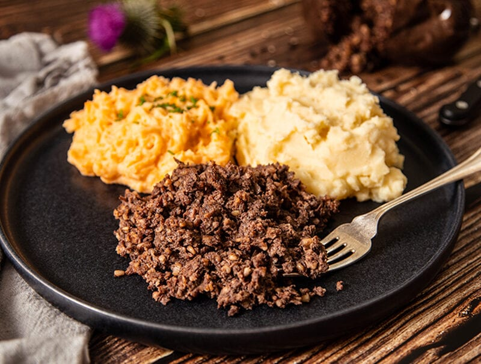
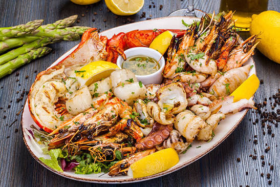
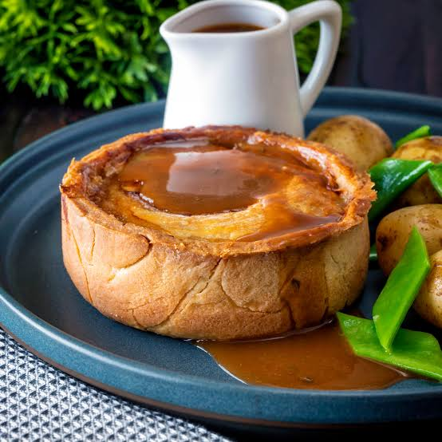
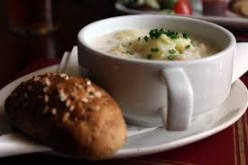
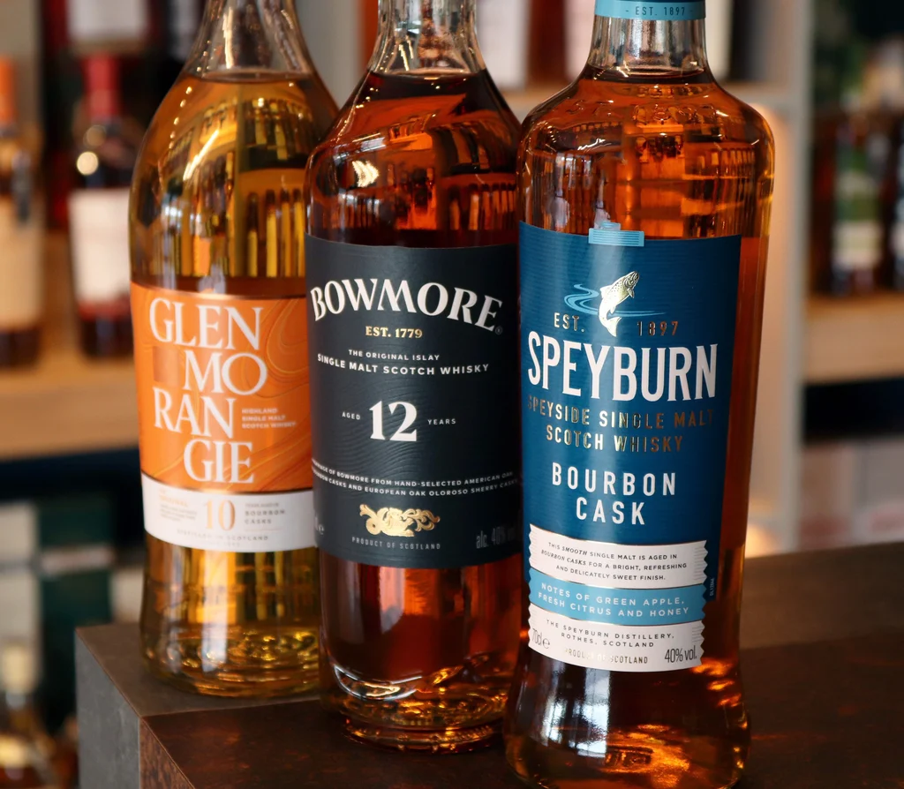

Haggis, Neeps & Tatties
Scotland's national dish is a savory pudding containing sheep's pluck, minced with onion, oatmeal, suet, spices, and stock, traditionally served with mashed turnips (neeps) and potatoes (tatties).

Fresh Scottish Seafood
With thousands of miles of coastline and pristine lochs, Scotland produces some of the finest smoked salmon, trout, oysters, and shellfish in the world.

Shortbread & Cranachan
Scottish bakeries are famous for crumbly butter shortbread, baked using centuries-old recipes. For dessert, Cranachan offers a delightful mix of whipped cream, fresh Scottish raspberries, oats, and whisky.

The Scottish Scotch Pie
Also known as a mutton pie, this double-crust meat pie is traditionally filled with minced mutton or beef, heavily spiced with pepper, and baked to a crisp, golden perfection.

Cullen Skink
Originating from the small fishing village of Cullen in Moray, this thick, comforting Scottish soup is made from smoked haddock, potatoes, onions, and rich cream.

Scottish Whisky
Known locally as Uisge Beatha in Gaelic, Scotch whisky must be aged in oak casks for at least three years in Scotland across five distinct distilling regions: Highland, Lowland, Islay, Speyside, and Campbeltown.